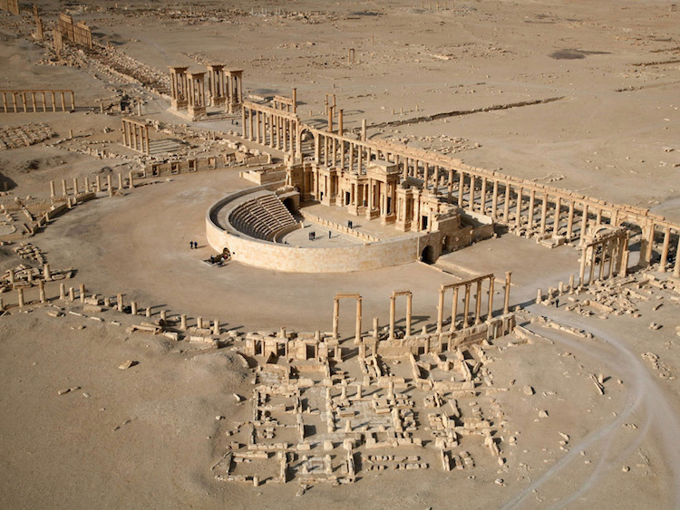
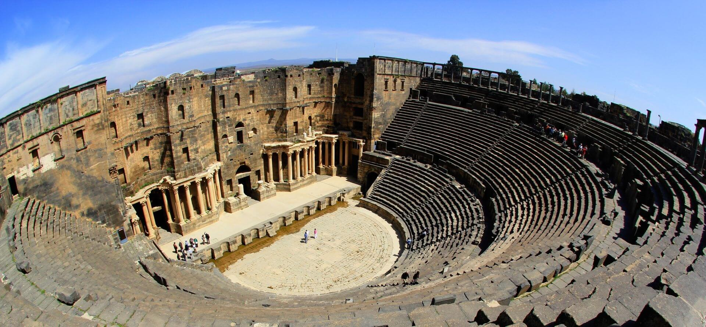
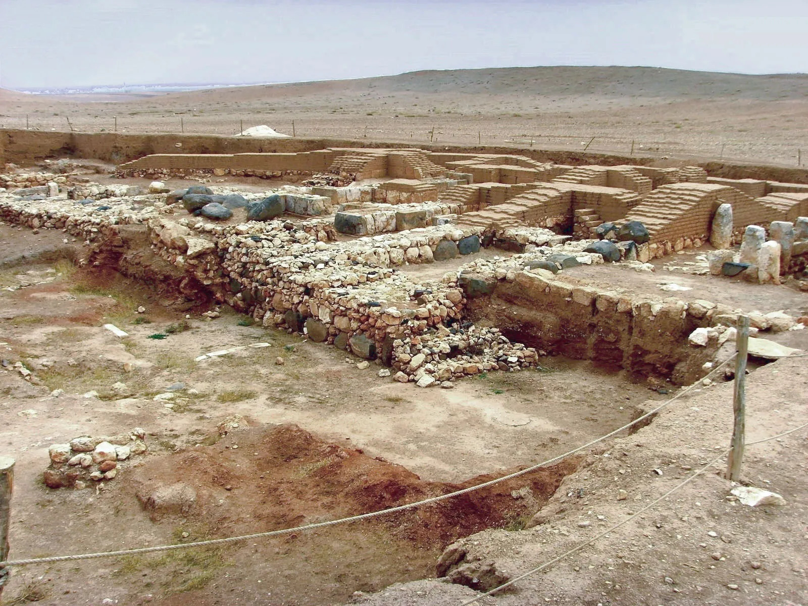
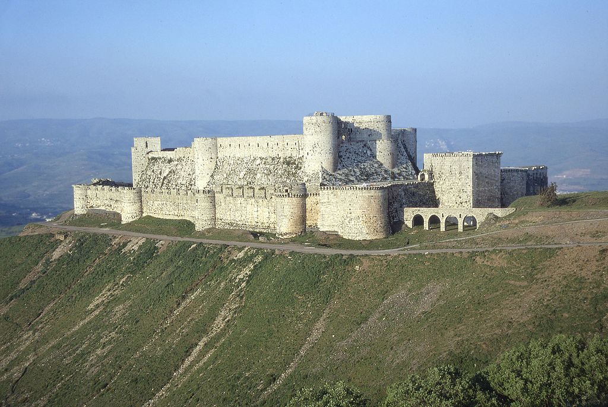
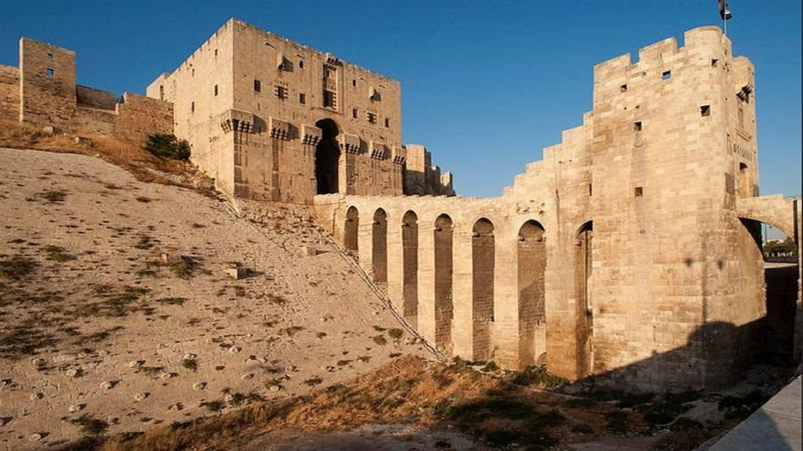

Suriye'nin Mirası
Zengin Bir Tarih ve Kültürün Gölgesinde Tehlike Altında
Suriye, insanlığın en eski uygarlıklarından bazılarının doğduğu ve binlerce yıldır farklı kültürlerin kesiştiği bir toprak parçasıdır. Bu zengin miras, antik kentler, kale kalıntıları, anıtlar, camiler, kiliseler ve geleneksel köylerden oluşan paha biçilemez bir hazineyi barındırır.
Suriye'nin mirasının bazı önemli unsurları şunlardır:
-
• Antik Kentler:
-
Palmira
UNESCO Dünya Mirası Listesi'nde yer alan Palmira, Romalılar tarafından inşa edilmiş ve "Çölün Gelini" olarak bilinen görkemli bir antik kenttir.
 -

Bosra
Roma İmparatorluğu'nun en önemli şehirlerinden biri olan Bosra, antik tiyatrosu ve Roma tapınaklarıyla ünlüdür.
-
Ebla
MÖ 3. binyılda önemli bir ticaret merkezi olan Ebla, çivi yazısıyla yazılmış geniş bir tablet arşiviyle bilinir.

-
-
• Kaleler:
-

Krak des Chevaliers
Haçlı Seferleri sırasında inşa edilmiş en büyük ve en iyi korunmuş kalelerden biridir.
-
Halep Kalesi
Tarihi ve mimari açıdan önemli bir yapı olmasına rağmen, savaş ve depremlerden dolayı zarar görmüştür.

-
Suriye'nin Mirası: Daha Derin Bir Bakış
Suriye'nin mirası, sadece antik kentler ve kalelerden ibaret değildir. Bu zengin miras, edebiyat, sanat, müzik, mutfak ve gelenekler gibi birçok farklı alana da uzanmaktadır.
-
• Edebiyat:
Suriye, Arap edebiyatının en önemli merkezlerinden biridir. MÖ 2. binyıldan kalma çivi yazısı metinlerden günümüze kadar uzanan bir edebiyat geleneğine sahiptir. En ünlü Suriyeli yazarlar arasında Ebû Nuvâs, El-Mutanabbi ve Adonis yer alır.
-
• Sanat:
Suriye sanatı, mozaik, minyatür, ahşap oymacılığı ve metal işleme gibi çeşitli sanat formlarını kapsar. Ülkenin zengin tarihi ve kültürel çeşitliliği, sanat eserlerinde de kendini göstermektedir.
-
• Müzik:
Suriye müziği, Arap müziğinin ana akımlarından biridir. Klasik Arap müziğinin yanı sıra, Suriye'ye özgü halk müzikleri de oldukça popülerdir.
-
• Mutfak:
Suriye mutfağı, Akdeniz ve Orta Doğu mutfaklarının etkilerini taşımaktadır. Humus, falafel, kebap ve baklava gibi Suriye mutfağına özgü yemekler dünyaca ünlüdür.
-
• Gelenekler:
Suriye'de birçok farklı gelenek ve görenek vardır. Bu gelenekler, dini bayramlar, düğünler ve diğer özel günlerde kutlanır.